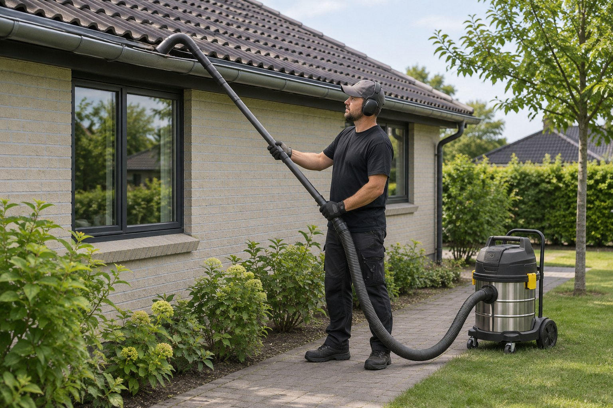

Tagrender
Vi aftaler de strækninger, der skal renses, og vurderer adgangen ud fra fotos eller et besøg.
Havearbejde · Struer og Thyholm
Vi renser tagrender med en specialstøvsuger til tagrender. Vi vurderer adgang, højde og forholdene ved huset, før vi aftaler opgaven.
Få et skriftligt tilbudRing 77 17 85 88
Vi aftaler de strækninger, der skal renses, og vurderer adgangen ud fra fotos eller et besøg.
Vi bruger en specialstøvsuger til tagrender. Efter forholdene kan børster eller trykluft fra kompressor indgå; metoden afklares før start.
Vi aftaler opsamling og placering af det fjernede materiale samt eventuel bortkørsel.
Fotos kan sendes til kontakt@hutsol.dk. Formularen kan bruges til en kort beskrivelse.
Sørg for fri adgang langs de aftalte områder. Oplys om skrøbelige overflader, installationer og adgang til strøm.
Send oplysninger om opgaven, by og ønsket tidspunkt. Vi afklarer spørgsmål og behov for et besøg.
Du får et skriftligt tilbud. Omfang, pris og adgang aftales, før arbejdet starter.
Vi udfører det aftalte arbejde og gennemgår opgaven ud fra den aftalte liste.
Længde, højde, adgang og mængden af materiale indgår i vurderingen. Du får et skriftligt tilbud på det aftalte omfang.
Se vores priser. En forespørgsel er ikke en bekræftet booking eller et løfte om, at opgaven kan udføres på to timer.
Vi bruger en specialstøvsuger til tagrender. Børster eller kompressor kan supplere efter forholdene.
Højde, placering og adgang skal vurderes først. Der loves ikke arbejde i enhver højde.
Nej, reparation eller udskiftning er ikke automatisk en del af rensningen.
Håndtering og eventuel bortkørsel af materialet aftales særskilt.
Vi hjælper i Struer, Holstebro, Lemvig og på Thyholm samt nærområder. Fortæl, hvor opgaven er.
Få et skriftligt tilbudRing til os